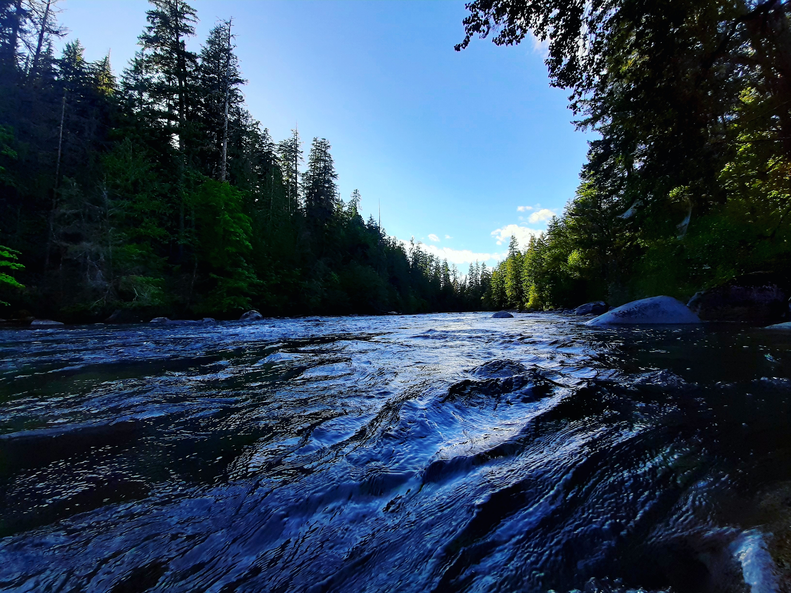

Stamp Falls is beautiful, located out by Beaver Creek. I was able to check out this during the summer. Wildlife does make their presence known, bears and eagles mostly. Fortunately, the bears do leave you alone. Even in the summer, the current was quite strong. Cold and refreshing though.